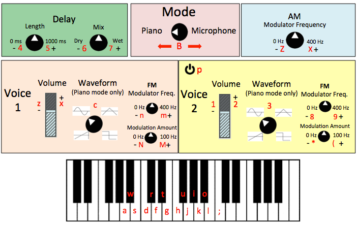

A Pretty Nifty Audio Synthesizer
by Ryan Edwards and Kiran Kumar


Final Project for C Programming for Music Technology - Fall 2014
Overview
This is an audio synthesizer using PortAudio and OpenGL. It can play both a variety of sounds using the computer keyboard as well as manipulate audio input through the computer's microphone (or whatever the default input device on your machine is).
Requirements
- You must be working on a machine using either Mac OS X or Linux
- You must have the PortAudio and OpenGL libraries installed
Setup
- The following files should be present in order for the program to compile and properly run:
- main.c
- sigProcessing.c
- sigProcessing.h
- Makefile
- Piano.png
- In your terminal, navigate to the folder that contains all of the aforementioned components
- Type make and press the Enter/Return key. The project should compile without errors.
Running the Program
- In the terminal, type ./synthesizer Piano.png and press Enter/Return
- Wait for the OpenGL window to load. It will show an image that looks like this:
 - With the OpenGL window remaining in focus, use the appropriate keys on the keyboard to control the various features of the synthesizer, indicated in the red letters in the image (also see "Controls" subsection below)
Controls
Note: These controls are case-sensitive!Mode
- B - toggle between one of two different sound source modes:
- Piano - play notes using keys on your computer keyboard
- Microphone - manipulate sound coming into your computer's default input device (usually the built-in microphone)
A subset of keys, indicated on the picture above, will play notes at the appropriate frequencies
w r t u i o
a s d f g h j k l ;
- x - increase volume
- z - decrease volume
- c - Toggle between one of 4 wave types
- Sine
- Sawtooth
- Square
- Triangle
- b - increase the amount of delay (max 1000 ms)
- v - decrease the amount of delay (min 0 ms)
- m - increase the percent of the wet (delayed) signal that is played
- n - decrease the percent of the wet (delayed) signal that is played
- q - quit the program